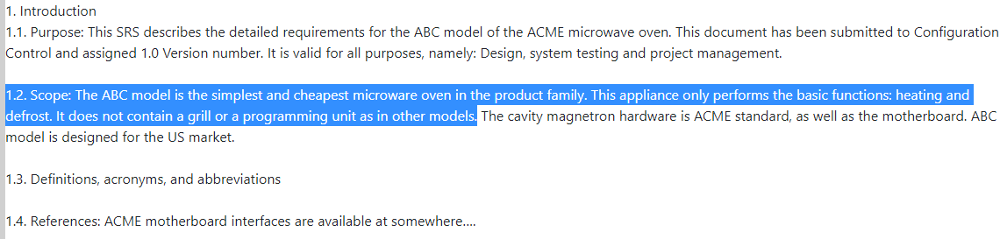
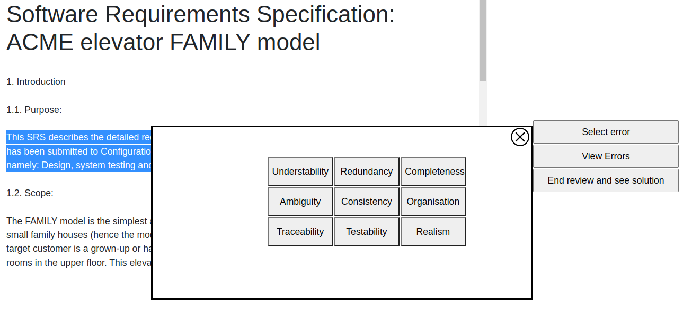

This assignment aims to exercise your ability to identify quality problems (in general, defects) in requirements specifications
Instructions
In this exercices you will have to select with the cursor a phrase of the text which you consider wrong

Once a portion of the text is select, you will be able to click on "select error", to relate that error to a type

Every time a error is selected, it will be marked on the text,
then you might delted it if you no longer considered rigth by clicking on it
When you are done selecting the errors, you will be able to see the document you made by selecting the errors
along side the answer, every error in the answer have a brief explanation which you can se by clicking in the bubble.